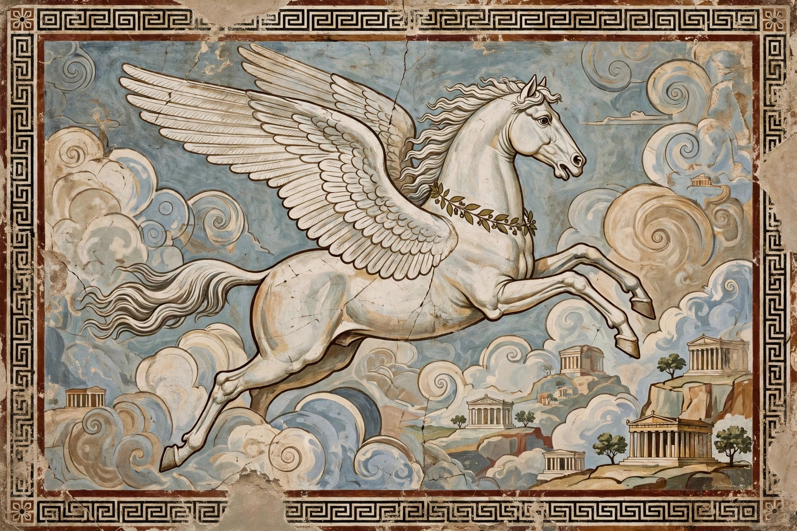

Pegasus
| Pegasus | |
| Grouping | Greek mythology |
|---|---|
| Parents | Poseidon and Medusa |
| Siblings | Chrysaor |
| Associated with | Bellerophon, the Muses |

Pegasus is a winged horse in Greek mythology, the offspring of the god Poseidon and the Gorgon Medusa. According to Hesiod, Pegasus sprang from Medusa's blood when the hero Perseus beheaded her, together with his brother Chrysaor.
Myths
Pegasus created the spring Hippocrene on Mount Helicon by striking the ground with his hoof, inspiring the Muses. Tamed by the hero Bellerophon with a golden bridle given by Athena, Pegasus carried him in the fight against the Chimera and the Amazons. When Bellerophon later tried to ride Pegasus to Olympus, Zeus caused him to fall; Pegasus was placed among the stars as a constellation.
Legacy
The winged horse became a universal symbol of poetry, inspiration and fame, appearing in heraldry, art from antiquity to Picasso, and as the namesake of a constellation, an oil company logo and spyware controversies alike.
See also: Bellerophon, Medusa.